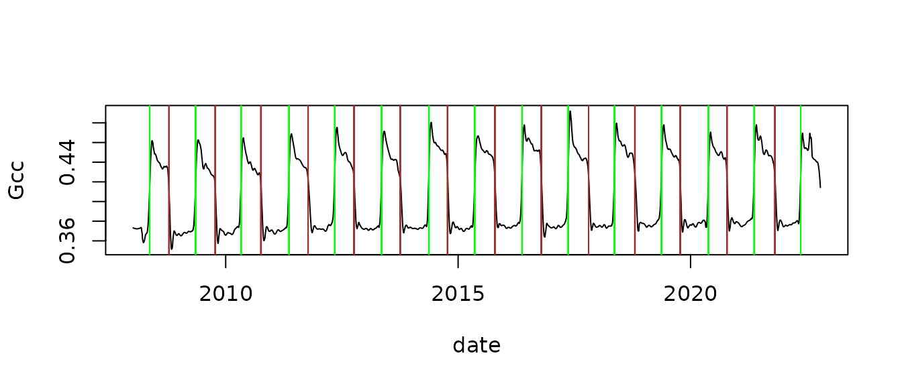

phenocamr functionality
Koen Hufkens
2021-11-21
Source:vignettes/phenocamr-vignette.Rmd
phenocamr-vignette.RmdA programmatic interface to the PhenoCam web services. Allows for easy downloads of PhenoCam near-surface remote sensing greenness (Gcc) time series directly to your R workspace or your computer. Post-processing allows for the smoothing of the time-series and the calculation of phenological transition dates as a final product.
The package gives access to the latest generated PhenoCam time series (at most 1-day old for running sites) and allows for the extraction of up-to-date phenological transition dates. However, the data acquired through the package will not be curated and vetted for data quality.
For a quality controlled and fully described dataset I suggest downloading the dataset as described by Richardson et al. (2018). This dataset uses the phenocamr packages in its final processing steps however quality control is gauranteed through careful review of the data. The data can be interactivly explored on explore.phenocam.us and downloaded in full from the ORNL DAAC. If in need of more recent data you can use the package and its functionality but be mindful of quality control especially the region-of-interest (ROI) used and potential unaccounted field-of-view (FOV) shifts in the dataset.
A worked example
Below I describe the most common use of the package, downloading recent PhenoCam time series and generating phenological transition dates for a given site and data type. I intentionally disable most automated processing and step through some of the routines to illustrate the workflow which normally happens internally to the main function download_phenocam(). Generated transition date files can be used in later analysis or modelling exercises using for example the phenor R package.
Select a site
A full list of meta-data for all sites can be queried using the list_sites() function.
sites <- list_sites()
head(sites)
#> site lat lon elev
#> 1 aafcottawacfiaf14e 45.29210 -75.76640 90
#> 2 aafcottawacfiaf14n 45.29290 -75.76700 90
#> 3 aafcottawacfiaf14w 45.29210 -75.76640 90
#> 4 acadia 44.37694 -68.26083 158
#> 5 admixpasture -43.64930 172.34950 33
#> 6 adrycpasture -43.65130 172.35010 31
#> contact1
#> 1 Elizabeth Pattey <elizabeth DOT pattey AT canada DOT ca>
#> 2 Elizabeth Pattey <elizabeth DOT pattey AT agr DOT gc DOT ca>
#> 3 Elizabeth Pattey <elizabeth DOT pattey AT canada DOT ca>
#> 4 Dee Morse <dee_morse AT nps DOT gov>
#> 5 John Hunt <huntj AT landcareresearch DOT co DOT nz>
#> 6 John Hunt <huntj AT landcareresearch DOT co DOT nz>
#> contact2 date_start
#> 1 Luc Pelletier <luc DOT pelletier3 AT canada DOT ca> 2020-04-27
#> 2 Luc Pelletier <luc DOT pelletier3 AT agr DOT gc DOT ca> 2021-09-03
#> 3 Luc Pelletier <luc DOT pelletier3 AT canada DOT ca> 2020-05-01
#> 4 John Gross <John_Gross AT nps DOT gov> 2007-03-15
#> 5 Scott Graham <grahams AT landcareresearch DOT co DOT nz> 2021-03-04
#> 6 Scott Graham <grahams AT landcareresearch DOT co DOT nz> 2021-03-02
#> date_end nimage tzoffset active infrared method
#> 1 2021-11-15 20975 -5 TRUE N ftppush
#> 2 2021-11-15 2770 -5 TRUE Y ftppush
#> 3 2021-11-15 20505 -5 TRUE N ftppush
#> 4 2021-11-19 55377 -5 TRUE N httppull
#> 5 2021-11-20 5281 12 TRUE Y ftppush
#> 6 2021-11-20 5075 12 TRUE Y ftppush
#> site_description
#> 1 AAFC Site - Ottawa (On) - CFIA - Field F14 - East Flux Tower
#> 2 AAFC Site - Ottawa (On) - CFIA - Field F14 - North Section
#> 3 AAFC Site - Ottawa (On) - CFIA - Field F14 - West Flux Tower
#> 4 Acadia National Park, McFarland Hill, near Bar Harbor, Maine
#> 5 Eddy site, mixed species irrigated dairy pasture, Ashley Dene Research & Development Station, South Island, New Zealand
#> 6 Ryegrass-clover irrigated dairy pasture, Ashley Dene Research & Development Station, South Island, New Zealand
#> group camera_description camera_orientation site_type
#> 1 <NA> Campbell Scientific CCFC NE II
#> 2 <NA> StarDot NetCam SC NNW I
#> 3 <NA> Campbell Scientific CCFC WNW II
#> 4 National Park Service unknown NE III
#> 5 <NA> StarDot NetCam SC I
#> 6 <NA> StarDot NetCamSC I
#> flux_data flux_networks flux_sitenames MAT_site MAP_site MAT_daymet
#> 1 TRUE <NA> 6.4 943 6.30
#> 2 TRUE 6.4 943 6.30
#> 3 TRUE OTHER <NA> 6.4 943 6.30
#> 4 FALSE NA NA 7.05
#> 5 TRUE NZ-ADw NA NA NA
#> 6 TRUE NA NA NA
#> MAP_daymet MAT_worldclim MAP_worldclim
#> 1 952 6.0 863
#> 2 953 5.9 863
#> 3 952 6.0 863
#> 4 1439 6.5 1303
#> 5 NA 11.6 640
#> 6 NA 11.6 639
#> dominant_species
#> 1 Zea mays, Triticum aestivum, Brassica napus, Glycine max
#> 2 Zea mays, Triticum aestivum, Brassica napus, Glycine max
#> 3 Zea mays, Triticum aestivum, Brassica napus, Glycine max
#> 4
#> 5 Lolium perenne, Lolium multiflorum, Trifolium pratense, Trifolium repens, Plantago lanceolata
#> 6 Lolium perenne, Trifolium repens
#> primary_veg_type secondary_veg_type koeppen_geiger ecoregion wwf_biome
#> 1 AG AG Dfb 8 4
#> 2 AG AG Dfb 8 4
#> 3 AG AG Dfb 8 4
#> 4 DB EN Dfb 8 4
#> 5 AG Cfb NA 8
#> 6 AG Cfb NA 8
#> landcover_igbp
#> 1 12
#> 2 12
#> 3 12
#> 4 5
#> 5 NA
#> 6 NA
#> site_acknowledgements
#> 1 Camera funded by Agriculture and Agri-Food Canada (AAFC) Project J-001735 - Commercial inhibitors’ impact on crop productivity and emissions of nitrous oxide led by Dr. Elizabeth Pattey; Support provided by Drs, Luc Pelletier and Elizabeth Pattey, Micrometeorologiccal Laboratory of AAFC - Ottawa Research and Development Centre.
#> 2 Cameras funded by Agriculture and Agri-Food Canada (AAFC) Project J-001735 - Commercial inhibitors’ impact on crop productivity and emissions of nitrous oxide led by Dr. Elizabeth Pattey; Support provided by Drs, Luc Pelletier and Elizabeth Pattey, Micrometeorologiccal Laboratory of AAFC - Ottawa Research and Development Centre.
#> 3 Cameras funded by Agriculture and Agri-Food Canada (AAFC) Project J-001735 - Commercial inhibitors’ impact on crop productivity and emissions of nitrous oxide led by Dr. Elizabeth Pattey; Support provided by Drs, Luc Pelletier and Elizabeth Pattey, Micrometeorologiccal Laboratory of AAFC - Ottawa Research and Development Centre.
#> 4 Camera images from Acadia National Park are provided courtesy of the National Park Service Air Resources Program.
#> 5 Ministry of Business, Innovation and Employment; New Zealand Agricultural Greenhouse Gas Research Centre; Manaaki Whenua
#> 6 Ministry of Business, Innovation and Employment; New Zealand Agricultural Greenhouse Gas Research Centre; Manaaki WhenuaTo select a site first download an overview meta-data table of all available sites together with their ROI id’s and vegetation type and a limited set of meta-data parameters.
rois <- list_rois()
head(rois)
#> site lat lon veg_type roi_id_number
#> 1 aafcottawacfiaf14e 45.29210 -75.76640 AG 1000
#> 2 aafcottawacfiaf14w 45.29210 -75.76640 AG 1000
#> 3 acadia 44.37694 -68.26083 DB 1000
#> 4 acadia 44.37694 -68.26083 DB 2000
#> 5 admixpasture -43.64930 172.34950 AG 1000
#> 6 adrycpasture -43.65130 172.35010 AG 1000
#> description
#> 1 Field in foreground
#> 2 field in foreground
#> 3 Deciduous trees in foreground center
#> 4 Mixed forest in foreground. Start new timeseries due to camera/FOV change.
#> 5 grass in foreground
#> 6 Pasture
#> first_date last_date site_years missing_data_pct
#> 1 2020-04-28 2021-11-16 1.6 0
#> 2 2020-05-01 2021-11-16 1.5 1
#> 3 2007-03-15 2017-09-20 9.8 7
#> 4 2017-10-11 2021-11-19 3.7 9
#> 5 2021-03-03 2021-11-19 0.7 4
#> 6 2021-06-10 2021-11-19 0.5 0Download a PhenoCam time series.
The below code shows you how to download a PhenoCam time series for the “harvard” site, ROI (roi_id) 1 and a time step frequency of 3-days. In this case the default outlier detection and smoothing routines has been disabled and will be run separately in subsequent steps. In normal use these will be enabled by default. The default output directory is tempdir() but any directory can be specified for data management purposes. If default settings are maintained, outlier detection and smoothing will be performed automatically. If so desired phenology dates can be estimated in one pass. In the latter case new data will be written in the same directory as specified for downloading the time series data.
download_phenocam(site = "harvard$",
veg_type = "DB",
roi_id = "1000",
frequency = 3,
outlier_detection = FALSE,
smooth = FALSE,
out_dir = tempdir())
#> Downloading: harvard_DB_1000_3day.csvAfter downloading we read in the data from disk. The data has a header and is comma separated.
df <- read_phenocam(file.path(tempdir(),"harvard_DB_1000_3day.csv"))
print(str(df))
#> List of 10
#> $ site : chr "harvard"
#> $ veg_type : chr "DB"
#> $ roi_id : chr "1000"
#> $ frequency : chr "3day"
#> $ lat : num 42.5
#> $ lon : num -72.2
#> $ elev : num 340
#> $ solar_elev_min: num 10
#> $ header : Named chr [1:24] NA NA NA "harvard" ...
#> ..- attr(*, "names")= chr [1:24] "#" "# 3-day summary product timeseries for harvard" "#" "# Site" ...
#> $ data :'data.frame': 5158 obs. of 32 variables:
#> ..$ date : chr [1:5158] "2008-01-05" "2008-01-06" "2008-01-07" "2008-01-08" ...
#> ..$ year : int [1:5158] 2008 2008 2008 2008 2008 2008 2008 2008 2008 2008 ...
#> ..$ doy : int [1:5158] 5 6 7 8 9 10 11 12 13 14 ...
#> ..$ image_count : int [1:5158] NA NA NA NA NA NA NA NA NA NA ...
#> ..$ midday_filename : chr [1:5158] NA NA NA NA ...
#> ..$ midday_r : num [1:5158] NA NA NA NA NA NA NA NA NA NA ...
#> ..$ midday_g : num [1:5158] NA NA NA NA NA NA NA NA NA NA ...
#> ..$ midday_b : num [1:5158] NA NA NA NA NA NA NA NA NA NA ...
#> ..$ midday_gcc : num [1:5158] NA NA NA NA NA NA NA NA NA NA ...
#> ..$ midday_rcc : num [1:5158] NA NA NA NA NA NA NA NA NA NA ...
#> ..$ r_mean : num [1:5158] NA NA NA NA NA NA NA NA NA NA ...
#> ..$ r_std : num [1:5158] NA NA NA NA NA NA NA NA NA NA ...
#> ..$ g_mean : num [1:5158] NA NA NA NA NA NA NA NA NA NA ...
#> ..$ g_std : num [1:5158] NA NA NA NA NA NA NA NA NA NA ...
#> ..$ b_mean : num [1:5158] NA NA NA NA NA NA NA NA NA NA ...
#> ..$ b_std : num [1:5158] NA NA NA NA NA NA NA NA NA NA ...
#> ..$ gcc_mean : num [1:5158] NA NA NA NA NA NA NA NA NA NA ...
#> ..$ gcc_std : num [1:5158] NA NA NA NA NA NA NA NA NA NA ...
#> ..$ gcc_50 : num [1:5158] NA NA NA NA NA NA NA NA NA NA ...
#> ..$ gcc_75 : num [1:5158] NA NA NA NA NA NA NA NA NA NA ...
#> ..$ gcc_90 : num [1:5158] NA NA NA NA NA NA NA NA NA NA ...
#> ..$ rcc_mean : num [1:5158] NA NA NA NA NA NA NA NA NA NA ...
#> ..$ rcc_std : num [1:5158] NA NA NA NA NA NA NA NA NA NA ...
#> ..$ rcc_50 : num [1:5158] NA NA NA NA NA NA NA NA NA NA ...
#> ..$ rcc_75 : num [1:5158] NA NA NA NA NA NA NA NA NA NA ...
#> ..$ rcc_90 : num [1:5158] NA NA NA NA NA NA NA NA NA NA ...
#> ..$ max_solar_elev : num [1:5158] NA NA NA NA NA NA NA NA NA NA ...
#> ..$ snow_flag : logi [1:5158] NA NA NA NA NA NA ...
#> ..$ outlierflag_gcc_mean: logi [1:5158] NA NA NA NA NA NA ...
#> ..$ outlierflag_gcc_50 : logi [1:5158] NA NA NA NA NA NA ...
#> ..$ outlierflag_gcc_75 : logi [1:5158] NA NA NA NA NA NA ...
#> ..$ outlierflag_gcc_90 : logi [1:5158] NA NA NA NA NA NA ...
#> - attr(*, "class")= chr "phenocamr"
#> NULLExpanding 3-day data for maximum phenology resolution
The downloaded time series is of a 3-day resolution. However, to correctly evaluate the phenology on a daily time step the time series needs to be expanded to this one day time step. This can be achieved using the expand_phenocam() function.
df <- expand_phenocam(df)Detect data outlier
After reading in the data as a data frame you can apply the outlier detection routine. This routine uses an iterative method to detect outlier values in the Gcc time series. This routine filters out most spurious values due contaminiation by snow, mist, rain or otherwise very bright events. Warnings are suppressed as the routine is iterative and might throw warnings if it does not converge on a solution. This has no implications for the routine and data returned.
df <- detect_outliers(df)Smoothing a time series
After detecting outliers you can smooth the data. This function uses an AIC based methodology to find the opitmal loess smoothing window. Warnings are suppressed as the routine uses an optimization in which certain parameter settings return warnings. This has no implications for the routine and data returned.
df <- smooth_ts(df)Calculating phenophases
Finally, if smoothed data is available you can calculate phenological transition dates. This routine uses a PELT changepoint detection based approach to find meaningful seasonal cycles in the data. By default start of growing season dates are returned. If the reverse parameter is set to TRUE the end of growing season dates are returned. Dates are formatted as unix time and will be provided for three default threshold values (10 / 25 / 50%) of the Gcc amplitude.
start_of_season <- transition_dates(df)
#> Warning in index_segment <= max_loc: longer object length is not a multiple of
#> shorter object length
#> Warning in index_segment < max_loc: longer object length is not a multiple of
#> shorter object length
print(head(start_of_season))
#> transition_10 transition_25 transition_50 transition_10_lower_ci
#> 1 14001 14006 14014 13999
#> 2 14360 14366 14374 14357
#> 3 14718 14724 14730 14715
#> 4 15095 15100 15107 15093
#> 5 15452 15460 15467 15444
#> 6 15824 15828 15835 15822
#> transition_25_lower_ci transition_50_lower_ci transition_10_upper_ci
#> 1 14005 14012 14004
#> 2 14365 14372 14363
#> 3 14723 14728 14721
#> 4 15099 15105 15098
#> 5 15458 15465 15456
#> 6 15827 15833 15826
#> transition_25_upper_ci transition_50_upper_ci threshold_10 threshold_25
#> 1 14008 14015 0.37706 0.38982
#> 2 14368 14375 0.37711 0.38903
#> 3 14726 14731 0.37760 0.39157
#> 4 15102 15108 0.37978 0.39200
#> 5 15462 15468 0.38219 0.39806
#> 6 15830 15836 0.38201 0.39462
#> threshold_50 min_gcc max_gcc
#> 1 0.41902 0.36847 0.46190
#> 2 0.41846 0.36793 0.46226
#> 3 0.41781 0.36882 0.46465
#> 4 0.42046 0.37067 0.46825
#> 5 0.42793 0.37233 0.47542
#> 6 0.42482 0.37270 0.47074Alternatively you can use the phenophases() function which is a wrapper of the transition_dates() function. However, as it potentially writes data to disk it needs additional information such as the roi_id, site name etc. The phenophases() function is the function which generated the final data products in the Richardson et al. (2018) paper. If used internally the output will be formatted in unix time, when written to file the dates will be human readable in YYYY-MM-DD format. Both start and end of season estimates will be provided.
phenology_dates <- phenophases(df, internal = TRUE)With the phenoogy dates calculated we can plot their respective locations on the smoothed time series. In this case the plot will show the 50% amplitude threshold values for both rising and falling parts of the 90th percentile Gcc curve, marked with green and brown vertical lines respectivelly.
plot(as.Date(df$data$date),
df$data$smooth_gcc_90,
type = "l",
xlab = "date",
ylab = "Gcc")
# rising "spring" greenup dates
abline(v = phenology_dates$rising$transition_50,
col = "green")
# falling "autumn" senescence dates
abline(v = phenology_dates$falling$transition_50,
col = "brown")
References
Hufkens K., Basler J. D., Milliman T. Melaas E., Richardson A.D. 2018 An integrated phenology modelling framework in R: Phenology modelling with phenor. Methods in Ecology & Evolution, 9: 1-10.